File list
This special page shows all uploaded files.
{kind=link}
{kind=link}
| Date | Name | Thumbnail | Size | User | Description | Versions |
|---|---|---|---|---|---|---|
| 16:18, 30 September 2016 | Fortunity - Hunter Bow.png (file) | 411 bytes | Akenoyuki | 1 | ||
| 21:38, 25 October 2016 | Sm recovery.png (file) | 411 bytes | Tachi | 1 | ||
| 00:58, 18 September 2015 | Whiteherb.png (file) |  |
411 bytes | AloeLeaflet | 1 | |
| 02:28, 28 March 2016 | 18587 blue bunny band.png (file) | 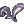 | 412 bytes | Renata | 1 | |
| 03:29, 18 September 2017 | ACO Heal.png (file) | 412 bytes | AloeLeaflet | 1 | ||
| 14:53, 14 October 2016 | Crimson revolver.png (file) | 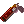 | 412 bytes | Appleproject | 1 | |
| 13:21, 5 October 2016 | Diamond Dust.png (file) | 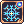 | 412 bytes | Seandh | 1 | |
| 01:00, 18 September 2015 | Immortalheart.png (file) | 412 bytes | AloeLeaflet | 1 | ||
| 15:17, 7 January 2016 | Charm-Wind.png (file) | 413 bytes | Pruu | for use in Pruu's Guide to Kagerou/Oboro for PVM | 1 | |
| 14:57, 4 November 2015 | ProofOfLoyalty.png (file) | 413 bytes | Adri | 1 | ||
| 18:28, 8 October 2018 | 12040.png (file) | 414 bytes | AloeLeaflet | 1 | ||
| 16:04, 11 February 2016 | 12205.png (file) | 414 bytes | Mayo | 1 | ||
| 07:13, 27 March 2016 | 18585 orange bunny band.png (file) | 414 bytes | Renata | 1 | ||
| 13:23, 5 October 2016 | Extreme Vacuum.png (file) | 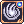 | 414 bytes | Seandh | 1 | |
| 01:33, 18 September 2015 | Holywater.png (file) | 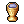 | 414 bytes | AloeLeaflet | 1 | |
| 05:38, 27 March 2016 | 18588 silvah bunny band.png (file) | 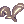 | 415 bytes | Renata | 1 | |
| 06:37, 30 September 2016 | Arrow Shower.png (file) | 415 bytes | Cyphers | 2 | ||
| 15:16, 7 January 2016 | Charm-Earth.png (file) | 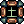 | 415 bytes | Pruu | for use in Pruu's Guide to Kagerou/Oboro for PVM | 1 |
| 22:44, 18 December 2015 | MEmperium.png (file) | 415 bytes | Adri | 1 | ||
| 23:21, 24 November 2015 | MysteriousDyestuffs.gif (file) | 415 bytes | Lai | 1 | ||
| 23:49, 16 September 2015 | Overspeed.png (file) | 415 bytes | AloeLeaflet | 1 | ||
| 23:17, 16 September 2015 | CondensedWhitePotion.png (file) | 416 bytes | AloeLeaflet | 1 | ||
| 05:38, 1 October 2016 | Fortunity - EoE Agi.gif (file) | 416 bytes | Akenoyuki | 1 | ||
| 07:43, 14 October 2016 | Howling of Lion.png (file) | 416 bytes | Ggboyz | 1 | ||
| 00:54, 10 September 2015 | STR Gloves.png (file) | 417 bytes | AloeLeaflet | 1 | ||
| 13:20, 5 October 2016 | Call Agni.png (file) | 418 bytes | Seandh | 1 | ||
| 15:37, 30 September 2016 | Fortunity - Autumn Headband.png (file) | 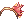 | 418 bytes | Akenoyuki | 1 | |
| 14:32, 7 January 2017 | Odin's Power.png (file) | 418 bytes | Ggboyz | 1 | ||
| 02:02, 18 September 2015 | Wolfblood.png (file) | 418 bytes | AloeLeaflet | 1 | ||
| 02:01, 18 September 2015 | Icepiece.png (file) | 419 bytes | AloeLeaflet | 1 | ||
| 14:00, 2 February 2016 | Splendidecoin.png (file) | 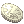 | 419 bytes | Adri | 1 | |
| 13:26, 5 October 2016 | Varetyr Spear.png (file) | 419 bytes | Seandh | 1 | ||
| 01:02, 18 September 2015 | Zenorcfang.png (file) | 419 bytes | AloeLeaflet | 1 | ||
| 13:22, 5 October 2016 | Electric Walk.png (file) | 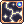 | 421 bytes | Seandh | 1 | |
| 14:15, 7 March 2017 | Pneuma.png (file) | 421 bytes | AloeLeaflet | 2 | ||
| 13:11, 19 September 2018 | Pt Star Emperor.png (file) | 421 bytes | Mallinock | 1 | ||
| 15:22, 7 January 2016 | Shadow Hiding.png (file) | 422 bytes | Pruu | for use in Pruu's Guide to Kagerou/Oboro for PVM | 1 | |
| 22:44, 18 December 2015 | MSteel.png (file) | 423 bytes | Adri | 1 | ||
| 02:02, 18 September 2015 | Redherb.png (file) | 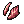 | 423 bytes | AloeLeaflet | 1 | |
| 03:02, 24 October 2016 | Release.png (file) |  |
423 bytes | Ggboyz | 1 | |
| 15:07, 4 November 2016 | Song of Despair.png (file) |  |
423 bytes | Ggboyz | 1 | |
| 01:34, 18 September 2015 | Sweetsauce.png (file) | 423 bytes | AloeLeaflet | 1 | ||
| 01:32, 18 September 2015 | Spicysauce.png (file) | 424 bytes | AloeLeaflet | 1 | ||
| 01:26, 10 September 2015 | Lauda Ramus.png (file) | 426 bytes | AloeLeaflet | 1 | ||
| 14:07, 4 February 2016 | Seagodsanger.png (file) | 426 bytes | Adri | 1 | ||
| 06:59, 2 November 2016 | Sensitive Keen.png (file) | 426 bytes | Ggboyz | 1 | ||
| 12:30, 30 September 2016 | Bullet.png (file) | 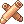 | 427 bytes | Appleproject | 1 | |
| 02:32, 3 October 2016 | Steal.png (file) | 427 bytes | Windrell | 1 | ||
| 14:54, 27 March 2016 | 5852 easter egg shell.png (file) | 428 bytes | Renata | 1 | ||
| 17:57, 16 July 2018 | ASPD.png (file) | 428 bytes | Colours | 1 |
{kind=link}
{kind=link}
{kind=link}
{kind=link}
{kind=link}
{kind=link}
{kind=link}
{kind=link}
{kind=link}
{kind=link}
{kind=link}
{kind=link}
{kind=link}
{kind=link}
{kind=link}
{kind=link}
{kind=link}
{kind=link}
{kind=link}
{kind=link}
{kind=link}
{kind=link}
{kind=link}
{kind=link}
{kind=link}
{kind=link}
{kind=link}
{kind=link}
{kind=link}
{kind=link}
{kind=link}
{kind=link}
{kind=link}
{kind=link}
{kind=link}
{kind=link}